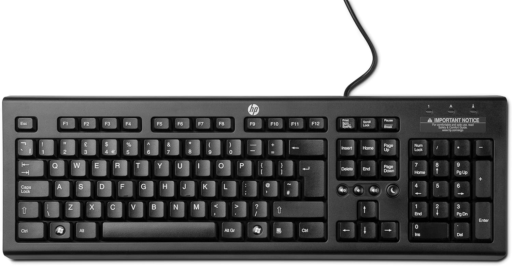
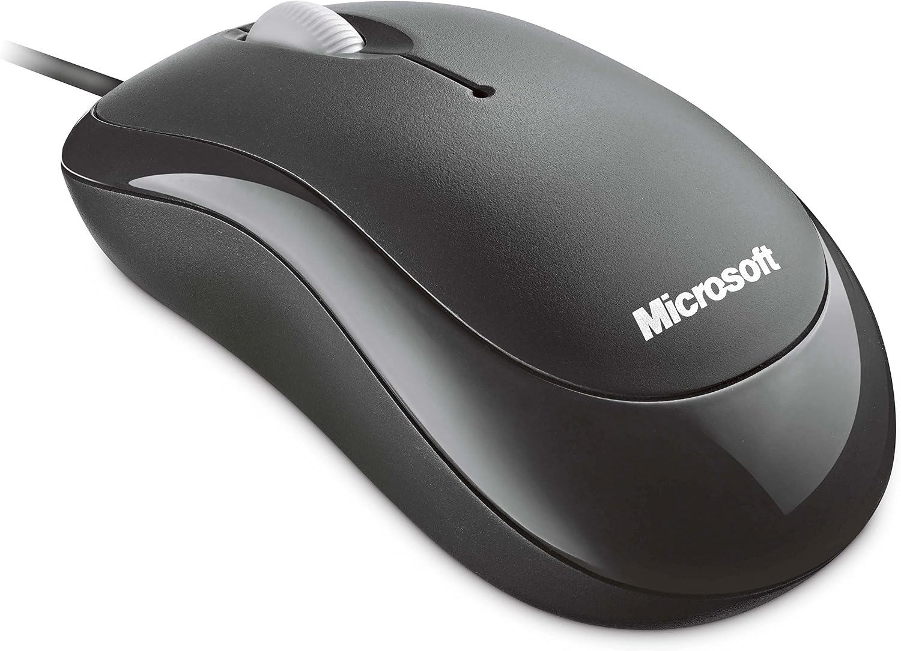

Mi primer computador
Aprende a reconocer y utilizar las partes básicas de un computador.
Nivel: Inicial
Lección 1. ¿Qué es un computador?
Un computador es un dispositivo electrónico que nos permite realizar diferentes actividades, como escribir, estudiar, buscar información y comunicarnos.
También podemos utilizarlo para aprender, trabajar y realizar actividades de entretenimiento.
Lección 2. Partes principales del computador
Observa las siguientes imágenes y aprende para qué sirve cada parte del computador.
1. Monitor

El monitor es la pantalla donde podemos observar imágenes, textos y videos.
Ejemplo: En el monitor puedes ver una fotografía o leer un documento.
2. Teclado

El teclado permite escribir letras, números y otros símbolos.
Ejemplo: Puedes escribir tu nombre utilizando las teclas.
3. Mouse o ratón

El mouse permite mover el cursor, seleccionar elementos y hacer clic.
Ejemplo: Puedes utilizarlo para seleccionar un botón en la pantalla.
Lección 3. ¿Cómo comenzar a utilizar el computador?
Para comenzar a utilizar un computador podemos seguir estos pasos:
- Ubicarnos frente al computador.
- Identificar el monitor, el teclado y el mouse.
- Comprobar que el computador esté conectado.
- Encender el equipo.
- Esperar a que aparezca la pantalla principal.
Lección 4. ¿Cómo encender y apagar el computador?
Para encenderlo
- Busca el botón de encendido del equipo.
- Presiona el botón una sola vez.
- Espera a que el sistema inicie.
Para apagarlo
- Guarda los documentos que estés utilizando.
- Abre el menú de inicio.
- Selecciona la opción de apagar.
- Espera a que el equipo se apague.
Lección 5. ¿Cómo utilizar el mouse?
El mouse permite controlar el cursor que aparece en la pantalla.
Clic
Presionamos una vez el botón principal para seleccionar un elemento.
Doble clic
Presionamos dos veces rápidamente para abrir algunos archivos o programas.
Desplazamiento
Utilizamos la rueda del mouse para subir o bajar en una página.
Lección 6. ¿Cómo escribir con el teclado?
El teclado contiene diferentes teclas que nos permiten escribir.
- Letras: permiten escribir palabras.
- Números: permiten escribir cantidades.
- Barra espaciadora: permite dejar espacios entre palabras.
- Enter: permite iniciar una nueva línea o confirmar una acción.
- Retroceso: permite borrar caracteres anteriores al cursor.
Actividad práctica
¿Qué parte del computador utilizamos principalmente para escribir?
¡Felicitaciones!
Has terminado el curso Mi primer computador. Sigue aprendiendo con los demás cursos de PICT.
Volver al catálogo